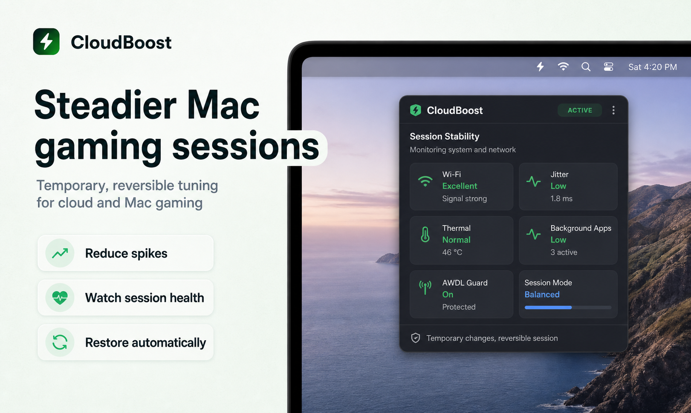
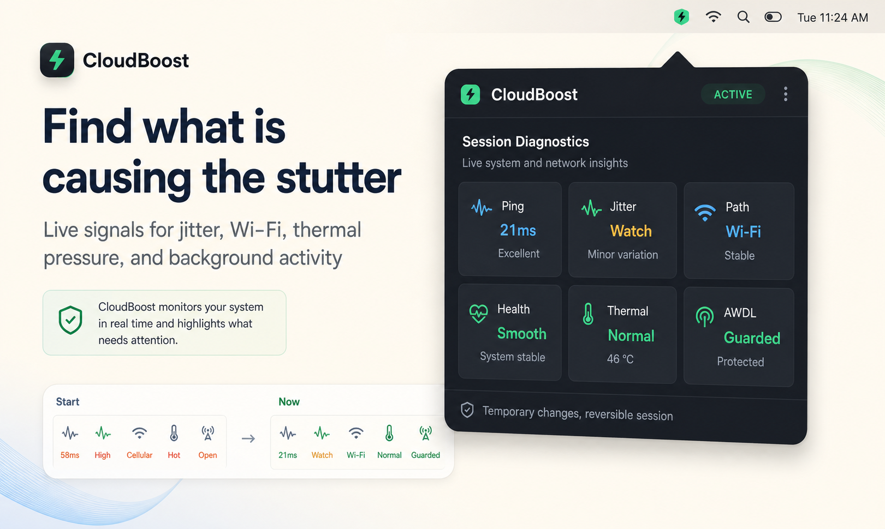
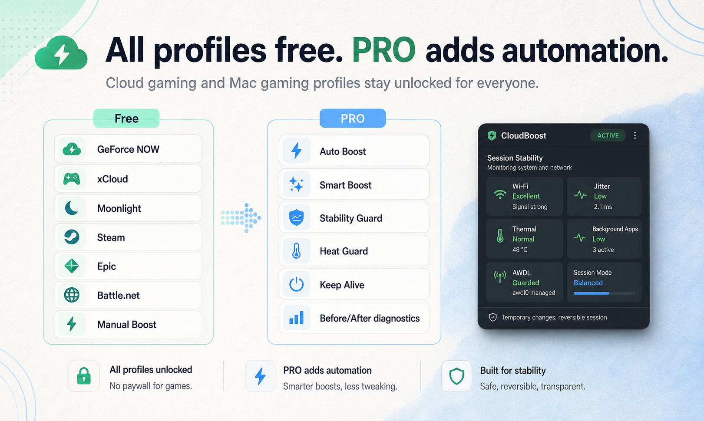

AWDL Guard
Handles the AirDrop/Handoff interface during sessions and restores it afterward.
Built for the annoying little spikes
A small macOS menu bar app for cloud gaming and Mac gaming sessions that feel fine one minute, then randomly stutter the next.
It does not promise magic FPS. It gives you a focused session mode, reversible system tweaks, and a clearer view of what may be getting in the way.

What it is trying to make visible



Why I built it
I kept seeing the same thing on Mac: the connection looks fine, the game launches fine, and then tiny spikes make the session feel worse than it should.
CloudBoost is my attempt at a practical answer. Start a session, reduce the usual macOS interruptions, and restore things when you stop.
Handles the AirDrop/Handoff interface during sessions and restores it afterward.
Combines DNS refresh, sleep prevention, process priority, and preset tuning.
Shows ping, jitter, network path, health, trend, and thermal-related signals.
PRO diagnostics compare the start of a session with the current state.
Downloads the latest DMG from GitHub releases from inside the app.
Free vs PRO
Use Free for manual boosting across cloud services and Mac launchers. Upgrade to PRO when you want automatic detection, session history, and stability checks while you play.
Get CloudBoost PRO| Feature | Free | PRO |
|---|---|---|
| GeForce NOW, xCloud, Boosteroid, Moonlight, VoidLink | Included | Included |
| Manual Boost and Balanced mode | Included | Included |
| Steam, Epic Games, Battle.net | Included | Included |
| Auto Boost and Auto-detect | - | Included |
| Smart Boost, Stability Guard, Heat Guard | - | Included |
| Keep Alive for long sessions | - | Included |
| Before/after diagnostics and session history | - | Included |
| Competitive and Smooth presets | - | Included |
What PRO helps with
Some macOS networking and process changes require approval. CloudBoost asks when a selected session needs those actions.
No. CloudBoost does not use KEXTs, hidden daemons, or permanent system patches.
Yes. The free version includes the supported cloud services, Mac gaming profiles, manual boost, and Balanced mode. PRO unlocks automation and advanced add-ons.
Because CloudBoost is distributed outside the App Store, you may need to clear quarantine after installing: xattr -cr /Applications/"CloudBoost.app"
Ready to try it?